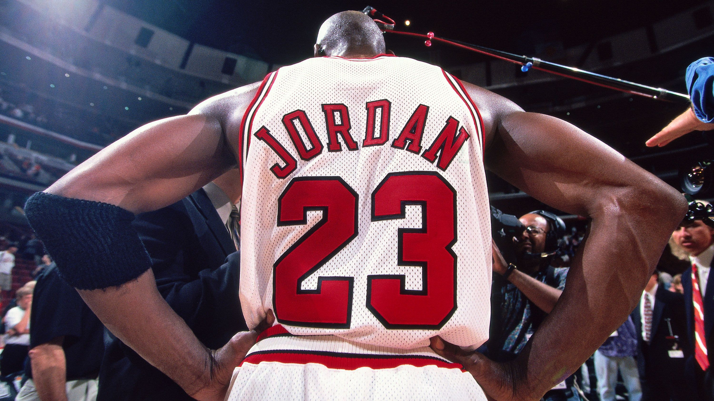

Michael Jordan "MJ"

"Some people want it to happen, some wish it would happen, others make it happen." - Michael Jordan
Michael Jordan's Career
Early years and The Bulls Rise
- 1984 NBA Draft: 3rd overall pick by Chicago Bulls.
- Rookie of the Year: 1985, instantly marked his arrival in the NBA.
- First Three-Peat: Led Bulls to three consecutive NBA Championships (1991-1993).
A Champion, No, THE Champion
- Scoring Champion: Won 10 scoring titles, showcasing unmatched offensive prowess.
- Champion: 6 series wins, 0 series losses in the finals.
- Finals MVP: Earned Finals MVP in each of his six championship victories.
The Abrupt Retirement, Then the Return
- Brief Retirement: Stepped away from basketball in 1993 to pursue baseball.
- Return to Glory: Returned to NBA in 1995, leading Bulls to another three-peat (1996-1998).
- Second Comeback: Returned to play for the Washington Wizards from 2001-2003 after second retirement.
- Final Retirement: Concluded his playing career in 2003.
Accolades and Achievements
- Defensive Great: 9-time NBA All-Defensive First Team.
- 5 MVP Awards: 1988, 1991, 1992, 1996, 1998.
- All-Star Appearances: 14-time NBA All-Star.
- Olympic Gold: Two-time Olympic gold medalist (1984, 1992 "Dream Team").
- Hall of Fame: Inducted into the Naismith Memorial Basketball Hall of Fame in 2009.
Beyond Basketball
- Charlotte Hornets: Became majority owner of the Charlotte Hornets in 2010.
- Global Icon: Beyond his on-court success, Jordan's impact on basketball culture, sneaker industry, and sports marketing remains unparalleled.
Jordan's Legacy
Michael Jordan's legacy transcends his basketball achievements, influencing generations of players and fans.
Jordan set the standard for what a professional sports player should strive for.
Throughout the world of basketball, there is no name more legendary than that of Michael Jordan.